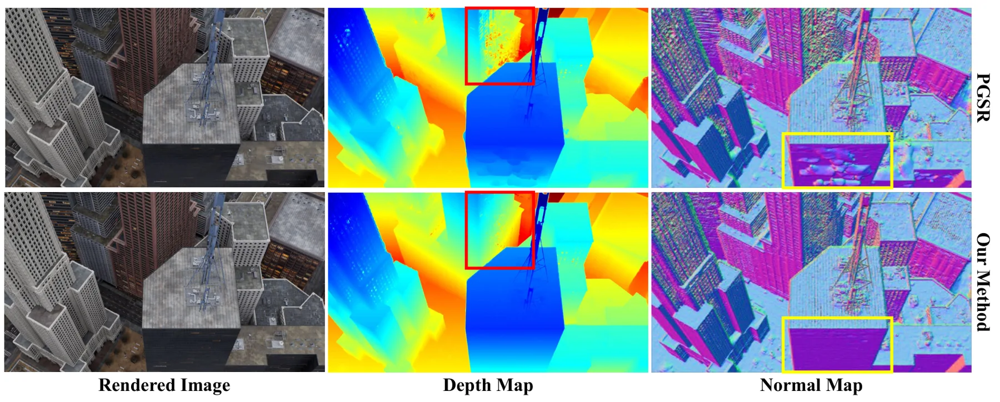
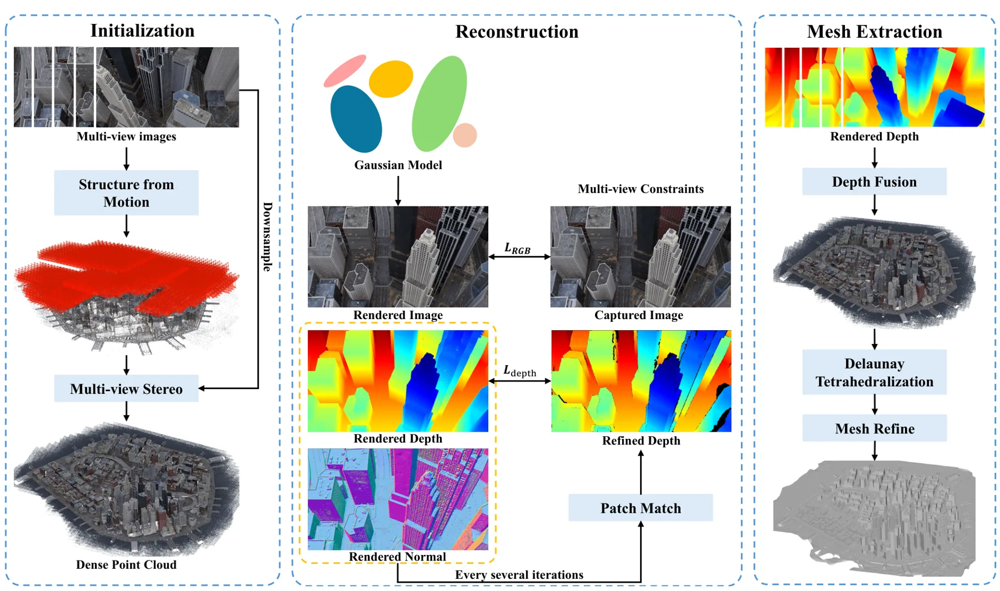
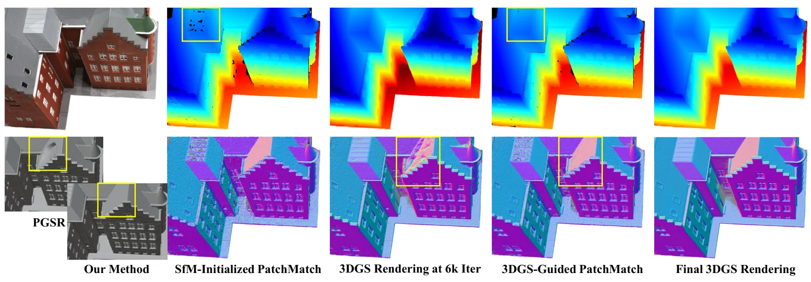
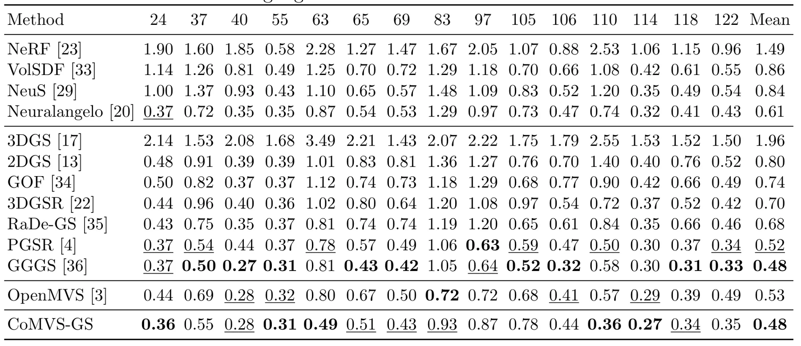
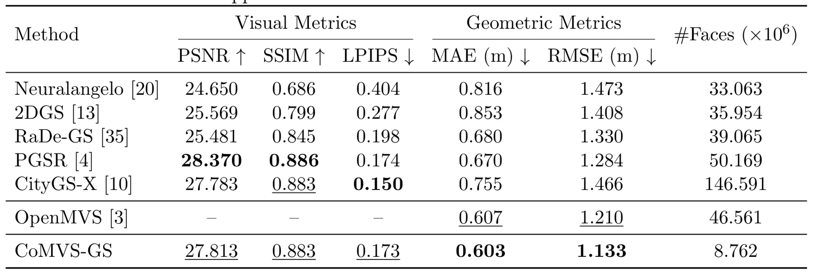

CoMVS-GS：用于表面重建的协同多视图立体与 3D Gaussian SplattingCoMVS-GS: Collaborative Multi-View Stereo and 3D Gaussian Splatting for Surface Reconstruction
直接覆盖 MVS、3DGS、几何优化和网格提取，和三维重建主线高度相关；但需要进一步核对弱观测区域、室外场景和不同点云密度下的泛化。
一句话工作总结
用 MVS 几何先验和 PatchMatch 互监督增强 3DGS 表面重建，并以 Delaunay graph-cut 提取网格。
摘要
CoMVS-GS 将多视图立体与 Gaussian Splatting 结合，用密集 MVS 点初始化带有预展平尺度和法向对齐方向的 Gaussian，以提供比稀疏 SfM 更强的几何先验。方法引入 PatchMatch-3DGS 互监督，让 Gaussian 渲染的深度和法向初始化 PatchMatch，而精化后的深度反过来监督 Gaussian 优化；表面提取采用 Delaunay graph-cut 网格化替代 TSDF 体素融合，以降低体素分辨率敏感性。作者在 DTU、GauU-Scene V2 和 MatrixCity 上报告了竞争性的重建与渲染结果。
3D Gaussian Splatting enables efficient novel view synthesis, but accurate mesh reconstruction remains difficult in weakly observed and occluded regions, where Gaussian primitives may grow into unstable or geometrically inconsistent structures. We propose CoMVS-GS, a general surface reconstruction framework that combines Multi-View Stereo with Gaussian splatting. CoMVS-GS initializes Gaussian primitives from dense multi-view stereo points with pre-flattened scales and normal-aligned orientations, providing stronger geometric priors than sparse structure-from-motion initialization and reducing ambiguity during early optimization. It further introduces PatchMatch-3DGS Mutual Supervision, where Gaussian-rendered depths and normals initialize PatchMatch refinement, and refined PatchMatch depths supervise Gaussian optimization to improve weakly constrained geometry. For surface extraction, CoMVS-GS replaces truncated signed distance field voxel fusion with a Delaunay graph-cut meshing pipeline, reducing sensitivity to voxel resolution while preserving visibility-consistent surface evidence. Experiments on DTU, GauU-Scene V2, and MatrixCity show that CoMVS-GS remains competitive on object-level reconstruction and improves geometric accuracy and mesh compactness in outdoor scenes while maintaining high rendering quality.
中文解读摘录
- 论文：arXiv:2608.18413 · PDF
- 作者：Shihan Chen, Junjing Zhang, Qingsong Yan, Haibing Liu, Haofan Ren, Fei Deng
- 核心方法：用密集 MVS 点、预展平尺度和法向对齐方向初始化 Gaussian，随后通过 PatchMatch-3DGS 互监督反复交换深度约束；表面提取采用 Delaunay graph-cut 网格化，减少 TSDF 体素分辨率敏感性。
- 判断：这是今日与三维重建最直接的工作，重点价值在于把强几何先验放到 3DGS 优化早期，并将深度精化和 Gaussian 训练闭环。后续应核查弱观测、遮挡、室外大尺度场景以及 MVS 错误对最终网格的传播。
- 评分：9.2/10。
图表/页面预览
{kind=link}

{kind=link}

{kind=link}

{kind=link}

{kind=link}
